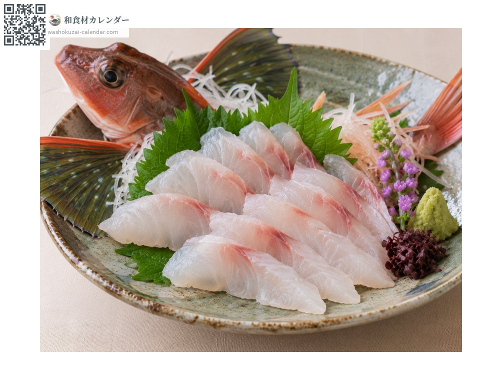
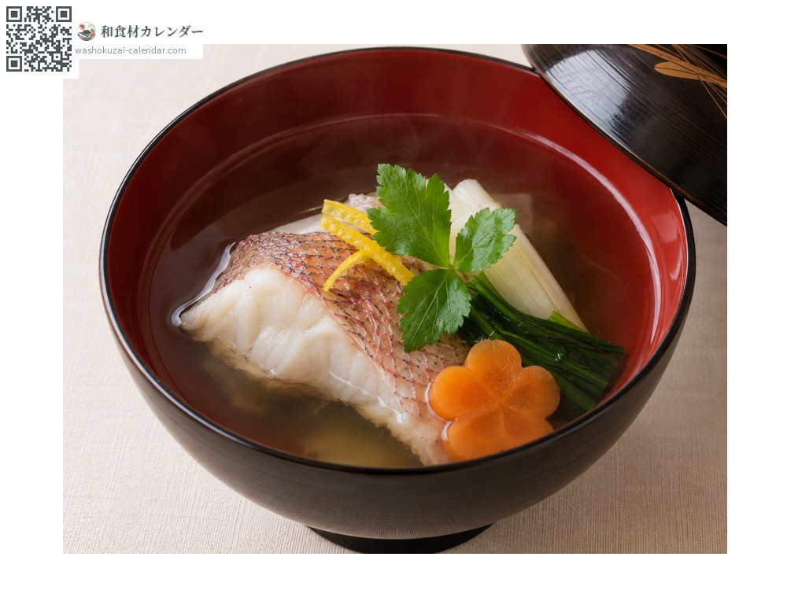
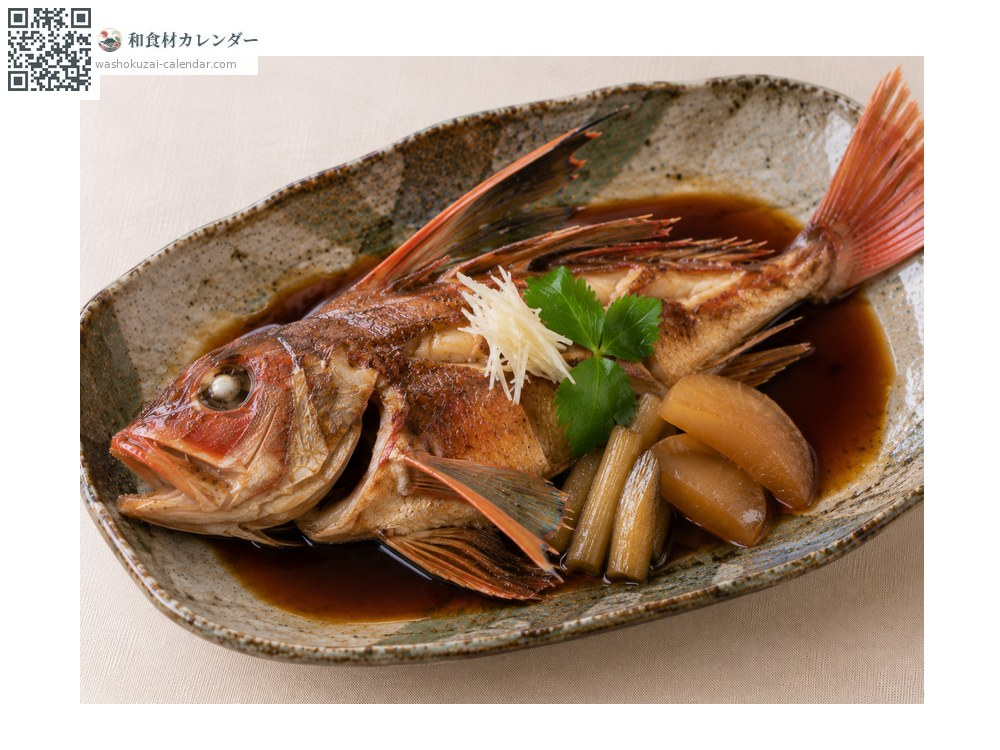
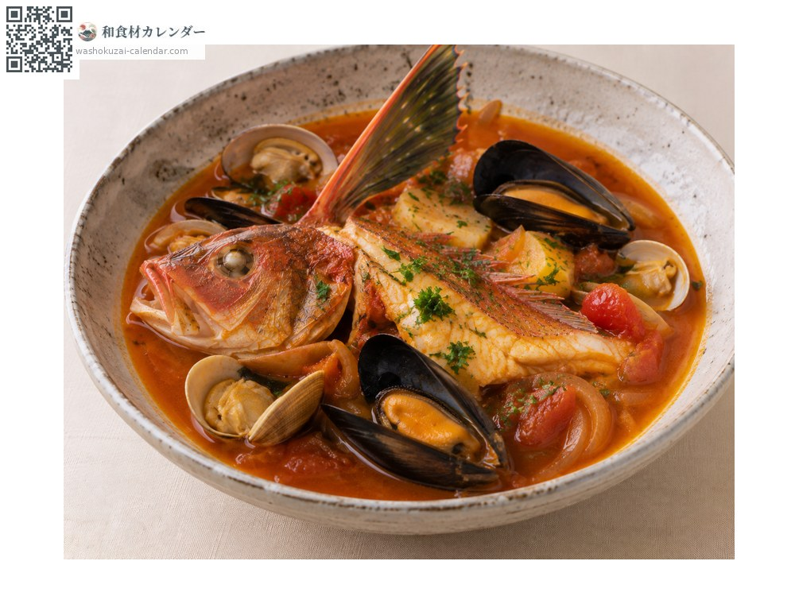

魚介
ホウボウ
ほうぼう
別名・別表記魴鮄、houbou、hobo
旬は1月・2月・11月・12月

旬の時期
1月
2月
3月
4月
5月
6月
7月
8月
9月
10月
11月
12月
旬出回り
調理法

刺身
上品な白身で甘みがある。昆布締めにも向く。

椀物
骨から澄んだ良い出汁が出る。

煮付け
甘辛く煮る。身がほろりとほどける。

ブイヤベース
洋風の魚介スープに。良い出汁が出る。
選び方
体色が鮮やかな赤で、胸びれの内側が鮮やかな青緑のもの。体に張りがあるもの。
保存方法
内臓を取って冷蔵。身が締まっているため2〜3日は持つ。
主な産地
豆知識
胸びれの内側が鮮やかな青緑色で、広げると蝶の羽のように美しい。浮き袋を震わせて「ボーボー」と鳴くことが名前の由来とされる。胸びれの下にある脚のような突起で海底を歩く。